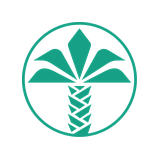
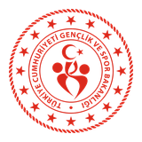

Mustafa Eren KOÇ
Ben Mustafa Eren, bilgisayar mühendisiyim. Mobil uygulamalar ve onların arkasındaki veri sistemlerini geliştiriyorum; bilimetri, akademik veri ve araştırma bilgi sistemleri üzerine araştırmayla ilgileniyorum.
İstanbul Teknik Üniversitesi'nde bilgisayar mühendisliği, Anadolu Üniversitesi'nde işletme okudum. Okurken bir yandan da çeşitli kurumlarda yarı zamanlı çalıştım ve staj yaptım.
mustafaerenkoc@yahoo.com koc20@itu.edu.tr (akademik)
Yazılım CV'si Akademik CV ORCID GitHub LinkedIn English
Araştırma
Araştırma ilgi alanlarım:
- Bilimetri ve Bilim Bilimi
- Akademik Veriler için Veri Madenciliği ve Doğal Dil İşleme
- Araştırma Bilgi Sistemleri ve Açık Araştırma Verisi
TRBio'dan çıkan iki makale hakem değerlendirmesinde:
Veri ve kod: Zenodo'da TRBio 1.0 veri seti ve GitHub'da analiz kodu.
Projeler
Türkiye pazarı için kozmetik içerik analizi uygulaması; Eylül 2026'dan beri App Store ve Google Play'de yayında.
- Uygulamayı tek başıma tasarlayıp geliştirdim ve yayına aldım; içerikleri sade Türkçeyle açıklıyor ve her ürün puanının gerekçesini gösteriyor.
- Uygulama içi abonelik içeren native iOS (Swift, SwiftUI, StoreKit) ve Android (Kotlin, Jetpack Compose, Google Play Billing, ML Kit ile barkod okuma) uygulamalarını geliştirdim.
- 1,5 milyondan fazla ürünlük kataloğun arkasındaki Python veri hattını ve FastAPI, PostgreSQL ve Redis tabanlı backend'i kurdum; içerik normalizasyonu ve otomatik kalite kapıları ekledim. Sistemi Docker, Nginx ve CI/CD ile kendi yönettiğim bir Linux sunucuda çalıştırıyorum.
Microsoft for Startups (Azure kredisi) ve OVHcloud Startup Program (10.000 EUR kredi) tarafından destekleniyor; dış yatırım almadan öz kaynakla büyüyor.
Swift · SwiftUI · Kotlin · Jetpack Compose · Python · FastAPI · PostgreSQL · Redis · Docker
Türkiye'deki akademisyenler için ücretsiz ve şeffaf bir rehber ve alan içi sıralama.
- 235 kurumda ve 2.370 alt alanda 200.000'den fazla akademisyeni kapsayan, yaklaşık 4,9 milyon tekilleştirilmiş yayının Meilisearch ile aranabildiği kamuya açık bir rehber geliştirdim.
- Sekiz bileşenli, sürümlü ve açık bir puanlama yöntemi tasarladım; bileşenler arasında SCImago Journal Rank (SJR) çeyreğiyle ağırlıklandırılmış yayınlar, atıf yüzdelikleri, fonlu projeler, tez danışmanlıkları, uluslararası iş birlikleri ve patentler var. Puanlar her gün yeniden hesaplanıyor ve her akademisyen kendi alanında karşılaştırılıyor.
- Bu akademisyenlerin 111.000'den fazlasını ORCID ve ortak DOI'ler üzerinden OpenAlex yazar kayıtlarıyla eşleştirdim. Teknolojiler: Python, FastAPI, Jinja2, MongoDB, Meilisearch, Cloudflare Tunnel; 7.600'den fazla otomatik test.
Python · FastAPI · MongoDB · Meilisearch · OpenAlex
İTÜ bitirme projesi: Türkiye biyoinformatik araştırma topluluğunun küratörlü bilgi tabanı; Naya Şahin ile birlikte, Doç. Dr. Ali Çakmak danışmanlığında.
- Ulusal akademik kayıtları katı, ORCID tabanlı eşleştirmeyle OpenAlex'e bağlayan kimlik eşleştirme, ana veri, puanlama ve portal katmanlarını geliştirdim (Python, FastAPI, MongoDB, D3.js).
- 99 üniversiteden 264 araştırmacıyı, yerel bir LLM (Ollama) ile etiketlenen 21 küratörlü araştırma alanında topladım; ortak yazarlık ağı ve 2020 sonrasında kurulan iş birlikleri üzerinde geriye dönük doğrulamada ROC-AUC 0,77'ye ulaşan bir iş birliği öneri sistemi geliştirdim.
- Briefings in Bioinformatics ve Database dergilerine gönderilen (Kasım 2026) iki makalenin ilk yazarıyım.
Python · FastAPI · MongoDB · D3.js · Ollama · OpenAlex
İş Deneyimi

- Erişim yönetimi, değişiklik yönetimi, yedekleme ve iş sürekliliği gibi BT genel kontrollerini BDDK bilgi sistemleri mevzuatına ve KVKK'ya göre denetledim; bulguları kriter, kanıt, neden ve etki yapısında raporladım.
- Türkiye'nin önde gelen 10 bankasının mobil bankacılık uygulamalarını beş başlıkta (mağaza puanları ve sürümler, ilk kullanım, giriş güvenliği, müşteri edinimi, para transferi) karşılaştıran 26 sayfalık bir denetim raporu hazırladım.
- Şubeler, ATM'ler, web ve mobil kanallar, çağrı merkezi ve yönetişim için erişilebilirlik mevzuatına uyumu ölçen, risk dereceli ve 20'den fazla testten oluşan bir denetim programı tasarladım.
- Büyük dil modellerinin eğitimi için Python, C/C++ ve JavaScript/TypeScript'te zorlayıcı kodlama görevleri ve örnek çözümler yazdım; model cevaplarını doğruluk ve kaliteye göre puanlayıp sıraladım (RLHF).
- Kalite kontrol rolünde diğer katkıcıların çalışmalarını inceleyip onayladım.
- Fabrika test verilerinin Excel'de takibinin yerini alması için full-stack bir web uygulaması (React, Node.js/Express, PostgreSQL) geliştirdim; backend ve frontend dahil baştan sona.

- Cisco router ve switch'lerin kurulumunu ve yapılandırmasını (IP adresleme, alt ağlar, güvenlik ayarları) kabin montajı ve kablolamayla birlikte yaptım; ağı kablo test cihazları ve Wireshark ile test edip arızaları giderdim.
Eğitim
Bitirme projesi: TRBio, Biyoinformatik Topluluk Portalı; danışman Doç. Dr. Ali Çakmak
Lisans boyunca Kale Vakfı (KSV) bursiyeri
Onur Derecesiyle Mezuniyet
Ders Projeleri:
- LLM ile Kod ve Test Üretimi (BLG 475E Software Quality and Testing). 30 HumanEval-X görevinde LLM'in ürettiği Java kodunu ve birim testlerini değerlendiren hattı kurdum: yerel llama.cpp çıkarımı, JUnit adaptörleri, JaCoCo dal kapsamı ve GitHub Actions üzerinde PITest mutasyon testi (iki kişilik ekip).
- Yerel Wikipedia RAG Asistanı (BLG 483E AI Aided Computer Engineering). 40 Wikipedia makalesi üzerinde tamamen yerelde çalışan RAG asistanı: cümle duyarlı parçalama, yerel embedding'ler, SQLite ve ChromaDB, Ollama üzerinden Llama 3.2 ve Streamlit sohbet arayüzü.
- Eşzamanlı Web Tarama Aracı ve Arama Motoru (BLG 483E AI Aided Computer Engineering). İndeksleme sürerken arama yapılabilen, standart kütüphaneyle yazılmış Python web tarama aracı: derinlik sınırlı tarama, tekrar önleme, geri basınç kontrolü, kaldığı yerden devam eden SQLite (WAL) kuyruğu ve yerel kontrol paneli.
- QueryCurious — Dış Ticaret Analitiği (BLG 317E Database Systems). Flask ve MySQL tabanlı analitik uygulaması; 126 MB'lık ticaret verisini dokuz tabloluk şemaya yükleyen akış tabanlı ETL'i, yönetim panelini ve rota gezginini geliştirdim (beş kişilik ekip).
Beceriler
Programlama: Python, Swift, Kotlin, TypeScript/JavaScript, SQL · ayrıca Java, C/C++
Backend ve Veri: FastAPI, Flask, Node.js/Express, PostgreSQL, MongoDB, MySQL, Redis, Meilisearch, ETL hatları, pytest
Yapay Zekâ ve LLM: LLM entegrasyonu ve değerlendirmesi, prompt mühendisliği, RAG (ChromaDB), yerel modeller (Ollama, llama.cpp), RLHF
Mobil ve Web: SwiftUI, UIKit, StoreKit, Jetpack Compose, Google Play Billing, ML Kit, Next.js, React, D3.js, Playwright
Altyapı: Linux, Docker, Nginx, CI/CD, Cloudflare, systemd